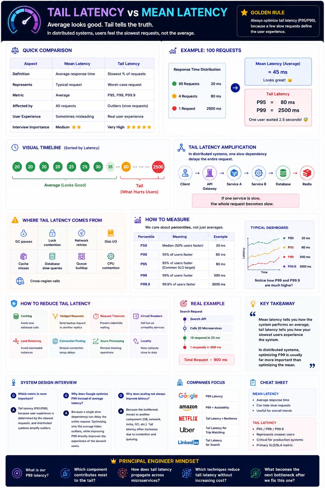

Average looks good. Tail tells the truth.
Golden Rule
Mean latency tells how the average request performs. Tail latency tells how the slowest requests perform. Production systems care more about tail latency.
Interview answer: Always optimize tail latency (P95/P99) — users experience the slowest requests, not the average.
Quick Comparison
| Feature | Mean Latency | Tail Latency |
|---|---|---|
| Definition | Average response time | Slowest % of requests |
| Represents | Typical request | Worst-case request |
| Metric | Average | P95, P99, P99.9 |
| Affected by | All requests | Outliers only |
| User Experience | Sometimes misleading | Real user experience |
| Interview Weight | Medium | Very High |
The Classic Example — 100 Requests
| Requests | Response Time |
|---|---|
| 95 requests | 20 ms |
| 4 requests | 80 ms |
| 1 request | 2500 ms |
Mean Latency
~45 ms
Looks great!
Tail Latency
P95 = 80 ms • P99 = 2500 ms
One user waited 2.5 seconds — that's what they remember.
Tail Latency Amplification
In distributed systems, a request calls multiple services. One slow dependency delays the entire request.
The user experiences the slowest service, not the average of all services.
Where Tail Latency Comes From
GC pauses
Lock contention
Network retries
Disk I/O
Cache misses
Slow DB queries
Queue buildup
CPU contention
Cross-region calls
How to Measure — Percentiles
| Percentile | Meaning | Typical Value |
|---|---|---|
| P50 | Median user | 20 ms |
| P90 | Fast majority | 60 ms |
| P95 | Common SLO target | 80 ms |
| P99 | Tail latency | 500 ms |
| P99.9 | Extreme outliers | 3000 ms |
Typical Dashboard
Notice how P99 and P99.9 are far above the mean.
How to Reduce Tail Latency
| Technique | Why It Helps |
|---|---|
| Caching | Avoid slow database calls on every request |
| Hedged Requests | Send backup request to another replica; take first response |
| Request Timeouts | Prevent indefinite waiting on slow dependencies |
| Circuit Breakers | Fail fast on unhealthy services; stop amplification |
| Load Balancing | Avoid routing to overloaded instances |
| Connection Pooling | Reduce connection setup delays |
| Async Processing | Remove blocking operations from critical path |
| Data Locality | Keep compute close to data to reduce network RTT |
Interview Q&A
Q: Which metric is more important — mean or tail latency?
Poor: Average latency.
Good: Tail latency (P95/P99). User experience is determined by the slowest requests, and distributed systems amplify outliers through fan-out.
Q: Why does Google optimize P99 instead of average latency?
A: A single slow dependency delays the entire request. Optimising only the average hides these outliers. Improving P99 directly improves the experience of the slowest users, who often have the most visibility (e.g. checkout, search).
Q: Why does scaling not always improve latency?
A: The bottleneck moves to another component (DB, network, locks, GC). Tail latency increases due to contention and queuing — USL applies.
Engineer Thinking Progression
Average latency is 40 ms — looks fine.
P95 is increasing — something is wrong.
What is causing the P99 spike? GC, lock contention, database, or network? How do we isolate those outliers?
How Top Companies Focus
| Company | Focus |
|---|---|
| Google Search | P99 Latency |
| Amazon Checkout | P99 + Availability |
| Netflix | Tail Latency + Resilience |
| Uber | Tail Latency for Trip Matching |
| Tail Latency for Search |
Interview Cheat Sheet
Principal Engineer Mindset
What is our P99 latency?
Which component contributes most to the tail?
How does tail latency propagate across microservices?
Which techniques reduce tail latency without increasing cost?
Mean latency tells you how the system performs on average. Tail latency tells you how your slowest users experience the system. In distributed systems, optimizing P99 is usually far more important than optimizing the mean.
